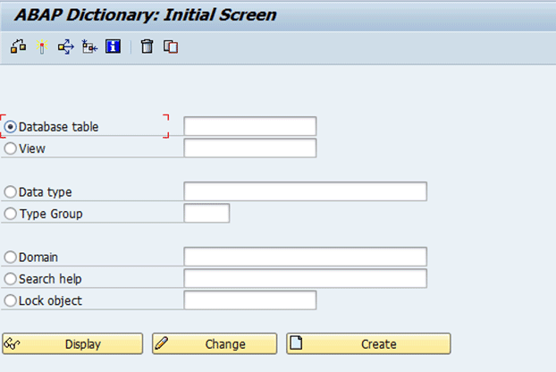

数据字典
数据字典是SAP特有的，是一种在系统级别定义表、结构、数据元素等数据类型，也就是说，在数据字典中定义的数据类型，在整个系统中都可以引用（有点像超大范围的全局数据类型）
数据类型可以在程序中通过TYPES语句定义并使用，也可以在数据字典中创建，二者的效果和使用方式是完全相同的，但数据字典类型的作用域更加广泛。
创建、修改（维护）数据字典的T-code是:SE11，

- 数据库表 Database Table
-
- 透明表（Transparent Table）：在数据库中有对应的物理表
- 存储表（Pooled Table）；簇表（Cluster Table）
- 视图 View
-
- 数据库视图 Database View
- 项目视图 Projection View
- 维护视图 Maintenance View
- 帮助视图 Help View
- 数据类型 Data Type
-
- 数据元素 Data Element：描述一个字段的用途
- 结构 Structure：为若干个字段组合，在数据库不存在数据记录
- 表类型 Table Type
类型池 Type Group
域 Domain：描述一个字段类型和长度等信息
搜索帮助 Search Help
锁对象 Lock Object
数据字典预置类型
| 数据字典预置类型 | ABAP 类型 | 运行长度 | 说明 |
|---|---|---|---|
| ACCP | N(6) | 6 | 会计结算周期 |
| CHAR | C(n) | 1 - 255 | 字符 |
| CLNT | C(3) | 3 | 集团、数据区域代码 |
| CUKY | C(5) | 5 | 货币代码 |
| CURR(n,m) | P((n+1)/2) Decimal m | 1月17日 | 货币金额 |
| DATS | D(8) | 8 | 日期 |
| DEC n,m | P((n+1)/2) Decimal m | n(1-31)m(1-17) | 数值计算 |
| FLTP | F(8) | 18 | 浮点数 |
| INT1 | X(1) | 3 | 单字节整型数 |
| INT2 | X(2) | 5 | 双字节整型数 |
| INT4 | X(4) | 10 | 四字节整形数 |
| LANG | C(1) | 内部一位，外部2位 | 语言代码 |
| LCHR | C(n) | 256-最大值 | 长字符 |
| LRAW | X(n) | 256-最大值 | 长字符串 |
| NUMC n | N(n) | 1-255 | 数值文字 |
| PREC | X(2) | 16 | 精确度 |
| QUAN n,m | P((n+1)/2) Decimal m | 1月17日 | 数量 |
| RAW n | X(n) | 1-255 | 位字串 |
| TIMS | T(6) | 6 | 时间 |
| VARC n | C(n) | 255-最大值 | 长字符 |
| STRING | String | 1-最大值 | 字符串 |
| RAWSTRING | Xstring | 1-最大值 | 位字符串 |
| UNIT | C(n) | 2月3日 | 单位 |